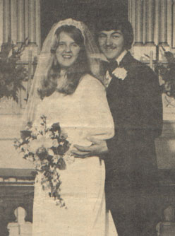

Hannah Beth Gutho
19?? - ?
Hannah Beth Wogsland was born to Walter and Vivian Wogsland. She was rather musically inclined, playing the accordian, piano, and organ. She married Mark L. Gutho April 27th, 1974 in New Hope, WI. Together they had three children.

Parents:
Vivian Irene Clementson ???? - 19??
Walter Emil Wogsland
19?? - 19??
Offspring:
Lisa Nicole Gutho
19?? - ?
Angela Joy Gutho
1978 - 2000
Amanda Sue Gutho 1983 - ?
References:
1. Neal Wogsland
2. Barb Wogsland
Last changed on 30 June 2005 by
Bradley James Wogsland
.